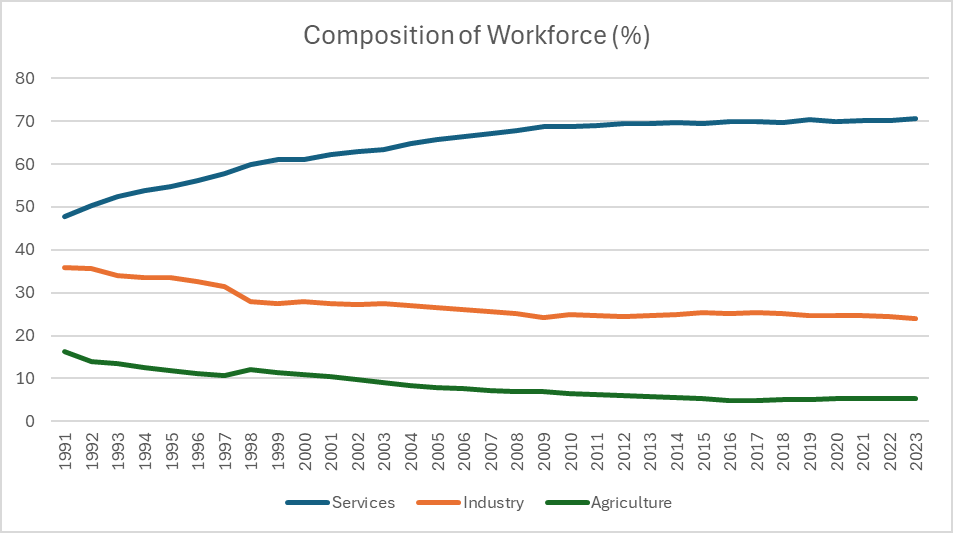
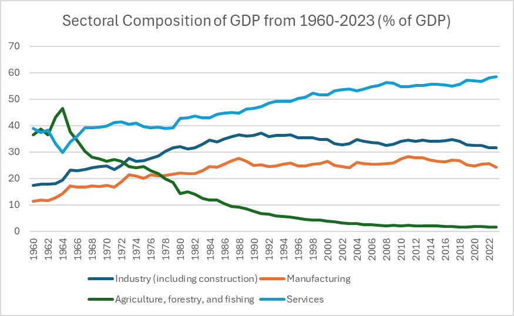

The Dissertation / Chapter IV
Chapter IV
Sectoral Metamorphosis
South Korea has undergone a stark transformation beginning in the 1960s, shifting from a primarily agricultural economy to a leader in manufacturing, industry, and services — a change initiated in part by significant improvements in technology and education, which enhanced the productivity and skills of the average worker.
The scale of the shift is best seen in agriculture's decline. In 1964, agriculture reached its peak contribution to GDP at 46.53%; today the sector accounts for only 1.60%. The decline is linked to rapid industrialization, a shrinking and aging agricultural population as workers migrated to cities, a decrease in arable land, and the impacts of climate change (Hahn et al., 2025). Agricultural employment fell from 16.37% of the workforce in 1991 to just 5.32% in 2023 — a decline mirrored almost perfectly in agriculture's shrinking GDP share (correlation: 0.97).

Replacing agriculture as the nation's economic engine, the industry and service sectors now dominate South Korea's GDP, their collective contribution rising from 56.48% in 1960 to over 90.01% in 2023. During the 1970s and 1980s, growth was driven by industry — manufacturing, construction, and mining — specializing in electronics, textiles, ships, and automobiles (Bajpai, 2024).
The service sector — tourism, commerce, communication, medical care, and finance — ultimately surpassed industry and now employs over 70% of the active workforce. While services were always larger in South Korea, it wasn't until the mid-1990s that industry began its relative decline. Both sectors remain essential economic drivers, employing the majority of the workforce and constituting most of GDP.
